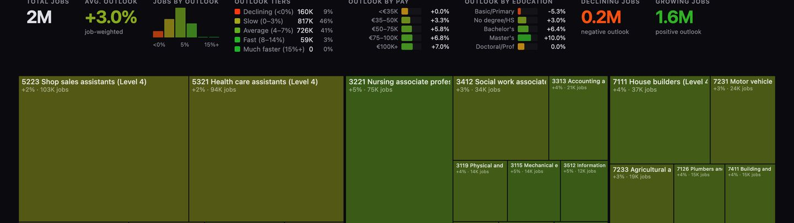
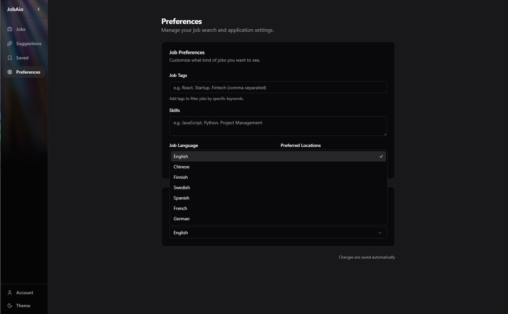
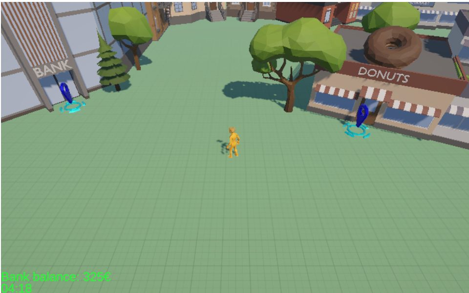
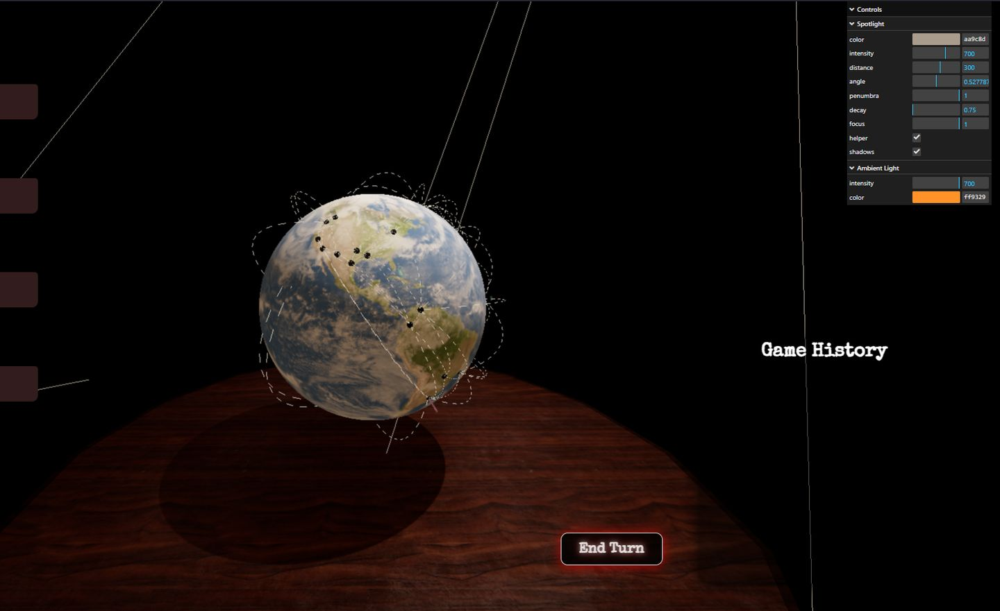

2009 — 2012
Vocational School Diploma
China · 4.2 / 5.0
Java · JavaScript · HTML+CSS · PHP · MySQL
Available now · full-time from January 2027
AI Engineer · Backend · Full‑stack
Ten years running project delivery, then a deliberate move into software engineering. I build LLM systems end to end — multi‑agent orchestration, semantic vector search, multi‑provider model routing, and the CI/CD and quality gates that keep them honest. A junior title, a decade of shipping behind it.

01 Selected work
Sole author — AI Systems Architect & Full-stack
An autonomous multi-agent platform for job-market intelligence. Background workers run real-time scrapers across four Finnish job boards, LLM-driven CV-to-job match scoring, a two-pass self-critiquing cover-letter generator, and deep company-research agents. I architected the semantic vector search over the corpus and the dynamic multi-provider LLM routing with per-feature model selection, behind a Jenkins + SonarQube quality gate.
~3,600 postings scraped and LLM-scored to date
Private repo — walkthrough available on request

Sole author to date — 7 of 7 commits
Forecasting Finnish labour-market indicators — quarterly job vacancies at one, two and four quarters ahead — from the Statistics Finland PxWeb API, with a retrieval layer that explains the result from official bulletins rather than replacing the numbers. I set one rule at the start: the fine-tuned model has to beat seasonal-naive, last-value, linear-regression and Prophet baselines, or it does not ship. Every snapshot and model run writes a provenance manifest. Ingestion and validation are complete; fine-tuning and evaluation are in progress.
Sole author — 43 of 43 commits
An interactive visualiser of the Finnish job market, combining StatFin occupational data with AI-exposure scoring. I self-hosted the supporting Linux infrastructure and the observability stack behind it.
13 GitHub stars

Lead contributor — 183 of 263 commits, team of four
An AI cover-letter generator built on Gemini. I led the frontend and DevOps work — the Vaadin UI, the Docker image and the Jenkins pipeline — and was the project's most active committer across the Spring Boot backend. Ships with six-language internationalisation including right-to-left support, JMeter load testing, and a SonarQube static-analysis gate.
Lead contributor & Scrum Master — 258 of 381 commits, team of five
A Finnish job-market scraper and aggregator pulling listings from multiple sources with AI-assisted analysis, built as a monorepo. I ran the team's Scrum process alongside the engineering.

Unity & backend developer — Junction 2025
A browser-based 3D finance-education game built at Junction 2025 in a two-person team. I worked on gameplay systems and backend integration, including custom ShaderLab and HLSL shader work.

Lead contributor — 157 of 271 commits, team of four
A Java discrete-event simulation of airport operations with a graphical interface. I built the simulation engine and backend as the team's most active committer.
Gameplay systems — 91 of 305 commits, team of four
A full-stack multiplayer 3D horror board game on a FastAPI backend with Three.js rendering. Primarily backend work as the second of four contributors.

02 Capabilities
03 Experience & education
2011 — 2021 · 10 years
China
A decade running project delivery before I moved to Finland and into software engineering. The management half of my CV is not new: planning, stakeholder communication and shipping to a deadline are things I did professionally for ten years — which is why I took the Scrum Master role on JobAio rather than avoiding it.
2024 — present
Metropolia University of Applied Sciences · Helsinki
Professional major: Software Engineering · 165 / 240 ECTS · GPA 4.38 / 5.0
Selected coursework
2009 — 2012
China · 4.2 / 5.0
Java · JavaScript · HTML+CSS · PHP · MySQL
2024
IFC Innovate — Enhancing Construction Experience
Formed a team with Finnish participants for Peikko's BIM metadata challenge with zero prior domain experience. Over nearly forty sleepless hours we climbed the learning curve and finished in the top ten of nearly two hundred submissions.
2025
Returned for a second year and delivered MoneyMoves — a browser-based 3D finance-education game — as gameplay and backend developer.
2024
Unbreakable Connectivity challenge track
Competed in the Unbreakable Connectivity track, November 2024.
References
Contact details available on request.
04 Contact
I'm looking for an internship, trainee or junior position as an AI engineer, backend or full-stack developer — in Helsinki or remote across the EU.